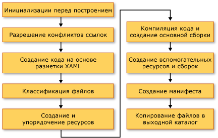

Построение приложения WPF
Приложения Windows Presentation Foundation (WPF) может быть собран как .NET Framework исполняемые файлы (.exe), библиотеки (.dll) или сочетание обоих типов сборки. В этом разделе даются вводные сведения для построения приложений WPF и описываются основные шаги процесса построения.
Построение приложения WPF
Приложения WPF можно компилировать следующими способами.
Из командной строки. Приложение должно содержать только код (без XAML) и файл определения приложения. Дополнительные сведения см. в разделе Построение из командной строки с помощью csc.exe или Построение из командной строки (Visual Basic).
С помощью Microsoft Build Engine (MSBuild). Помимо кода и файлов XAML приложение должно содержать файл проекта MSBuild. Дополнительные сведения см. в разделе "MSBuild".
Visual Studio. Visual Studio — это интегрированная среда разработки, которая компилирует приложения WPF с помощью MSBuild и включает визуальный конструктор для создания пользовательского интерфейса. Дополнительные сведения см. в разделе записи кода и управление им с помощью Visual Studio и конструктора XAML в Visual Studio.
Конвейер сборки WPF
Когда выполняется сборка проекта WPF, вызывается сочетание целевых объектов, специфичных для языка и WPF. Процесс выполнения этих целевых объектов называется конвейером сборки, и его ключевые шаги показаны на следующем рисунке.

Инициализации перед сборкой
Перед сборкой MSBuild определяет расположение важных инструментов и библиотек, включая следующие.
.NET Framework.
Каталоги Windows SDK.
Расположение ссылочных сборок WPF.
Свойство для путей поиска сборки.
В первую очередь MSBuild ищет сборки в каталоге ссылочных сборок (%ProgramFiles%\Reference Assemblies\Microsoft\Framework\v3.0\). На этом шаге процесс сборки также инициализирует различные свойства и группы элементов и выполняет все необходимые действия по очистке.
Разрешение ссылок
Процесс сборки находит и привязывает сборки, которые требуются для выполнения сборки проекта приложения. Эта логика содержится в задаче ResolveAssemblyReference. Все сборки, объявленные как Reference в файле проекта, предоставляются в задачу вместе с информацией о путях поиска и метаданными в сборках, уже установленных в системе. Задача ищет сборки и использует метаданные установленной сборки для фильтрации этих основных сборок WPF, которые не должны отображаться в манифестах выходных данных. Это позволяет избежать избыточных сведений в манифесте ClickOnce. Например, так как PresentationFramework.dll может считаться представителем приложения, построенного на, а также для WPF и, кроме того с момента все WPF сборки существует в том же расположении на каждом компьютере с .NET Framework установлен, нет необходимости включать в манифесты все сведения о всех ссылочных сборок .NET Framework.
Компиляция разметки — шаг 1
На этом шаге файлы XAML анализируются и компилируются, чтобы в среде выполнения не тратилось время на анализ XML и проверку значений свойств. Скомпилированный файл XAML заранее размечен, так что во время выполнения его загрузка происходит гораздо быстрее, чем загрузка файла XAML.
На этом шаге для каждого файла XAML, который является элементом сборки Page, выполняются следующие действия.
Файл XAML анализируется компилятором разметки.
Для этого XAML создается скомпилированное представление и копируется в папку obj\Release.
Создается представление CodeDOM нового разделяемого класса и копируется в папку obj\Release.
Кроме того, создается отдельный языковой файл кода для каждого файла XAML. Например для страницы Page1.xaml в проекте Visual Basic, создается файл Page1.g.vb; для страницы Page1.xaml в проекте C# создается файл Page1.g.cs. ".g" в имени файла указывает, что это файл созданного кода, который имеет объявление разделяемого класса для элемента верхнего уровня файла разметки (например, Page или Window). Класс объявляется с partial модификатор в C# (Extends в Visual Basic) для указания, есть другое объявление класса в другом месте, обычно в коде программной файл Page1.xaml.cs.
Разделяемый класс расширяется от соответствующего базового класса (такие как Page для страницы) и реализует System.Windows.Markup.IComponentConnector интерфейс. IComponentConnector Интерфейс содержит методы для инициализации компонента и связывания имен и событий элемента в его содержимом. Следовательно, в созданном файле кода имеется реализация метода, подобная следующей:
public void InitializeComponent() {
if (_contentLoaded) {
return;
}
_contentLoaded = true;
System.Uri resourceLocater =
new System.Uri(
"window1.xaml",
System.UriKind.RelativeOrAbsolute);
System.Windows.Application.LoadComponent(this, resourceLocater);
}
Public Sub InitializeComponent() _
If _contentLoaded Then
Return
End If
_contentLoaded = True
Dim resourceLocater As System.Uri = _
New System.Uri("mainwindow.xaml", System.UriKind.Relative)
System.Windows.Application.LoadComponent(Me, resourceLocater)
End Sub
По умолчанию компиляция разметки выполняется в том же AppDomain как MSBuild ядра. Это обеспечивает значительный выигрыш в производительности. Это поведение можно переключать с помощью свойства AlwaysCompileMarkupFilesInSeparateDomain. Это преимущество выгружаются все ссылочные сборки при выгрузке отдельного AppDomain.
Компиляция разметки — шаг 2
Не все страницы XAML компилируются на шаге 1 компиляции разметки. XAML файлы, имеющие локально определенные типы (ссылки на типы, определенные в коде в том же проекте), исключаются из компиляции на этом этапе. Причина заключается в том, что эти локально определенные типы существуют только в источнике и еще не скомпилированы. Чтобы определить это, синтаксический анализатор использует эвристику, которая включает поиск элементов, таких как x:Name, в файле разметки. При обнаружении такого экземпляра компиляция этого файла разметки откладывается, пока не будут скомпилированы файлы кода, после чего второй этап компиляции разметки обрабатывает эти файлы.
Классификация файлов
Процесс сборки помещает выходные файлы в различные группы ресурсов на основе того, в какую сборку приложения они будут помещены. В обычном нелокализованном приложении все файлы данных, отмеченные как Resource, помещаются в главную сборку (исполняемый файл или библиотеку). Когда в проекте задается UICulture, все скомпилированные файлы XAML и ресурсы, специально отмеченные как языковые, помещаются во вспомогательную сборку ресурсов. Кроме того, все независящие от языка ресурсы помещаются в главную сборку. На этом шаге процесса сборки принимается это решение.
Действия сборки ApplicationDefinition, Page и Resource в файле проекта могут быть дополнены метаданными Localizable (допустимые значения — true и false), которые определяют, зависит ли этот файл от языка.
Основная компиляция
На этапе основной компиляции выполняется компиляция файлов кода. Это управляется логикой в языковых файлах целей сборки Microsoft.CSharp.targets и Microsoft.VisualBasic.targets. Если эвристика определила, что первого этапа компилятора разметки достаточно, то создается главная сборка. Однако если один или несколько файлов XAML в проекте имеют ссылки на локально определенные типы, то создается временный DLL-файл, чтобы могли быть созданы окончательные сборки приложения по завершении второго этапа компиляции разметки.
Создание манифеста
В конце процесса сборки, когда будут готовы все сборки приложения и файлы контента, создаются манифесты ClickOnce для приложения.
Файл манифеста развертывания описывает модель развертывания: текущую версию, поведение обновления и идентификатор издателя вместе с цифровой подписью. Этот манифест должен создаваться администраторами, управляющими развертыванием. Файл имеет расширение .xbap (для XAML-приложения браузера (XBAP)) и .application для установленных приложений. Первое диктуется свойством проекта HostInBrowser, и в результате манифест идентифицирует приложение как браузерное.
Манифест приложения (файл .exe.manifest) описывает сборки приложения и зависимые библиотеки, а также перечисляет разрешения, необходимые для приложения. Этот файл должен быть создан разработчиком приложения. Для запуска приложения ClickOnce пользователь открывает файл манифеста развертывания приложения.
Эти файлы манифеста всегда создаются для XBAP. Для установленных приложений они не создаются, если в файле проекта не будет задано свойство GenerateManifests со значением true.
XBAP Получите два дополнительных разрешения разрешений, назначаемых типичные приложения зоны Интернета: WebBrowserPermission и MediaPermission. Система сборки WPF объявляет эти разрешения в манифесте приложения.
Добавочная сборка
Система сборки WPF обеспечивает поддержку добавочных сборок. Она достаточно интеллектуально обнаруживает изменения, внесенные в разметку или код, и компилирует только те артефакты, на которые повлияло изменение. Механизм добавочной сборки использует следующие файлы.
Файл $(AssemblyName)_MarkupCompiler.Cache для сохранения текущего состояния компилятора.
Файл $(AssemblyName)_MarkupCompiler.lref для кэширования файлов XAML со ссылками на локально определенные типы.
Ниже приведен набор правил, управляющих добавочной сборкой.
Файл — это наименьшая единица, в которой система сборки обнаруживает изменения. Таким образом, для файла кода система сборки не может узнать, был ли изменен тип или добавлен код. То же самое относится и к файлам проекта.
Механизм добавочной сборки должен знать, что страница XAML либо определяет класс, либо использует другие классы.
Если изменены записи
Reference, то перекомпилируются все страницы.При изменении файла кода перекомпилируются все страницы с локально определенными ссылками типа.
Если изменяется файл XAML:
XAML объявляется как
Pageв проекте: если XAML не имеет локально определенных ссылок на типы, перекомпилируется этот XAML плюс все страницы XAML с локальными ссылками; если XAML имеет локальные ссылки, перекомпилируются все страницы XAML с локальными ссылками.Если XAML объявляется как
ApplicationDefinitionв проекте: перекомпилируются все XAML страниц (причина: каждый XAML есть ссылка на Application тип, который мог быть изменен).
Если файл проекта объявляет файл кода как определение приложения вместо файла XAML:
Проверьте, изменилось ли значение
ApplicationClassNameв файле проекта (появился ли новый тип приложения). Если да, перекомпилируйте все приложение.В противном случае перекомпилируйте все страницы XAML с локальными ссылками.
При изменении файла проекта: примените все вышеперечисленные правила и посмотрите, что нужно перекомпилировать. Изменения следующих свойств приводят к полной перекомпиляции:
AssemblyName,IntermediateOutputPath,RootNamespaceиHostInBrowser.
Возможны следующие сценарии перекомпиляции.
Перекомпилируется все приложение.
Перекомпилируются только те файлы XAML, в которых есть локально определенные ссылки типа.
Ничего не перекомпилируется (если в проекте ничего не изменялось).